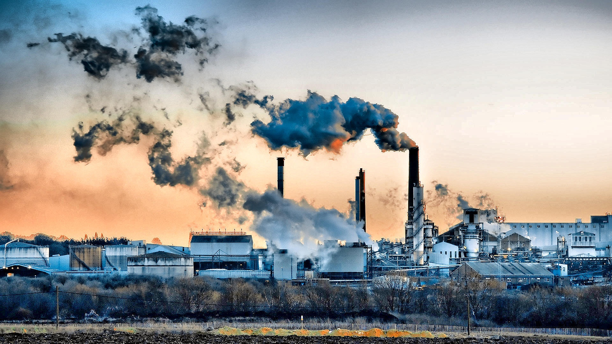

Capitalismo no Limite: O Modelo Econômico e a Crise Climática
Ponto de Partida: O Modelo Econômico e a Crise Climática
A crise climática que enfrentamos hoje, com suas secas severas, inundações, queimadas recordes e ameaças biológicas emergentes, não é apenas um problema ambiental isolado. Ela está intrinsecamente ligada ao nosso sistema econômico global dominante: o capitalismo. Embora o capitalismo tenha impulsionado inovações e gerado riqueza sem precedentes, sua busca incessante por crescimento e lucro, sem considerar plenamente os limites planetários e as externalidades ambientais, tem levado o planeta a um ponto de ruptura. Esta página explora as complexas conexões entre o modelo capitalista e a iminência de um apocalipse climático.
O Paradigma do Crescimento Infinito em um Planeta Finito
No cerne do capitalismo moderno está a premissa do crescimento econômico contínuo. A cada trimestre, espera-se que empresas e economias expandam seus lucros e produção. Este modelo baseia-se na ideia de que sempre haverá mais recursos a serem explorados e mais "espaço" para absorver os resíduos de nossa produção e consumo. Contudo, essa visão entra em choque direto com a realidade física de um planeta com recursos finitos e uma capacidade limitada de regeneração e absorção de poluição.
O desafio reside no conceito de externalidades negativas. No sistema capitalista tradicional, os custos ambientais da produção (como a poluição do ar e da água, o desmatamento, a perda de biodiversidade) não são incluídos no preço final de bens e serviços. As empresas não pagam pelo dano que causam ao meio ambiente ou à saúde pública, o que incentiva a degradação ambiental para maximizar o lucro. O planeta, e as futuras gerações, arcam com essas "contas escondidas", enquanto a economia segue seu caminho de expansão.
A Busca por Lucro: Extração Acelerada e Consumo Desenfreado
A prioridade do lucro a curto prazo, característica do capitalismo de mercado, muitas vezes prevalece sobre a sustentabilidade e a saúde ecológica a longo prazo. Isso se manifesta de diversas formas:
- Exploração Intensiva de Recursos Naturais: A busca por matérias-primas baratas e em abundância leva à mineração excessiva, à pesca predatória, ao desmatamento em larga escala e à extração implacável de combustíveis fósseis (carvão, petróleo e gás natural), a principal fonte de Gases de Efeito Estufa (GEE).
- Obsolescência Programada e Consumo Massivo: O sistema incentiva um ciclo de produção e consumo acelerado, com produtos feitos para ter uma vida útil limitada (obsolescência programada) e campanhas de marketing que estimulam o consumo excessivo. Isso gera uma montanha crescente de lixo e demanda por mais recursos, intensificando a pressão sobre os ecossistemas.
- Pouco Incentivo à Sustentabilidade Genuína: Embora haja um crescimento da "economia verde", o investimento em práticas sustentáveis que não geram retornos financeiros imediatos ou que reduzem a produção pode ser visto como um obstáculo ao crescimento tradicional, dificultando a transição para modelos mais ecológicos.

Desregulação, Poder Corporativo e a Resistência à Mudança
O poder e a influência de grandes corporações, especialmente aquelas ligadas a indústrias intensivas em carbono, representam um obstáculo significativo para a ação climática. Através de lobby político e financiamento de campanhas, essas empresas frequentemente resistem a regulamentações ambientais mais rigorosas que poderiam afetar seus lucros. A falta de regulamentação ou a desregulação permitem que a poluição continue sem custo, desestimulando a inovação em tecnologias limpas e a transição para fontes de energia renovável.
Além disso, a estrutura do capitalismo globalizado muitas vezes transfere os custos ambientais e sociais para regiões menos desenvolvidas. Países do Sul Global, que historicamente contribuíram menos para as emissões, frequentemente se tornam locais de descarte de resíduos ou de exploração intensiva de recursos, enquanto o Norte Global (que mais se beneficiou da industrialização) se beneficia economicamente, mas também é o principal motor do aquecimento.
O Capitalismo e o Apocalipse Climático: Uma Conexão Direta
A conexão entre o modelo capitalista e o apocalipse climático é direta e evidente. A busca implacável por crescimento e lucro:
- Acelera as Emissões de GEE: A queima de combustíveis fósseseis para atender à demanda de energia e transporte, e o desmatamento para expandir a agricultura e a indústria, são as principais causas do aumento dos Gases de Efeito Estufa e do aquecimento global.
- Esgota Recursos Naturais: A exploração desenfreada leva à degradação do solo, escassez de água, perda de florestas e extinção de espécies, minando a resiliência dos ecossistemas.
- Gera Poluição Generalizada: Resíduos industriais e de consumo poluem o ar, a água e o solo, afetando a saúde humana e ambiental.

Assim, o modelo econômico capitalista, em sua forma atual, não apenas contribui para os impactos climáticos que descrevemos, mas os potencializa, empurrando o planeta cada vez mais perto de pontos de não-retorno e de um cenário de colapso ambiental e social.
Conclusão: Rumo a um Novo Paradigma?
Reconhecer o papel central do capitalismo na crise climática não significa negar a necessidade de sistemas econômicos, mas sim questionar e reformar suas premissas e práticas. O desafio do "apocalipse climático" exige uma reavaliação fundamental: podemos ter um sistema econômico que prospere dentro dos limites planetários? A transição para uma economia mais sustentável, que valorize o bem-estar social e ambiental acima do crescimento ilimitado, que internalize os custos ambientais e que promova a equidade, é um dos maiores desafios do nosso século. É um caminho complexo, mas essencial para evitar as consequências mais catastróficas e construir um futuro viável.